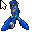

Loading navbar...
Mega Man Cursors
totallyfreecursors.com Cursors
Archived from an old version of totallyfreecursors.com. (repairs made when needed)

DOWNLOAD
6 .cur/.ani files zipped (22.5 KB)
CursorMania
A cursor based on Mega Man.
DOWNLOAD
.ani file (26.4 KB)


 6 .cur/.ani files zipped (22.5 KB)
6 .cur/.ani files zipped (22.5 KB) .ani file (26.4 KB)
.ani file (26.4 KB)